Ürünlerimiz
Yüksek kaliteli beton parke, bims ve lego beton çeşitlerimiz
Beton Parke Taşları
Estetik ve Dayanıklı Çözümler
Beton parke modellerimiz, çeşitli renk ve desen seçenekleri ile mekânlarınıza estetik bir görünüm kazandırırken sağlamlık ve dayanıklılık sunar. Her mekâna uygun çözümlerimizle yaşam alanlarınızı güzelleştirmeyi amaçlıyoruz.
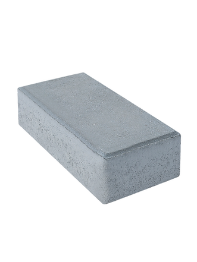
Dikdörtgen Parke Taşı
Dayanıklı ve estetik görünümlü klasik parke taşları
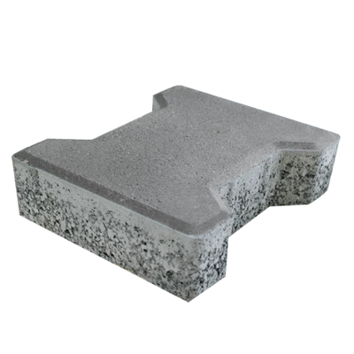
Kilitli (Aşık) Parke Taşı
Özel kilitlenme sistemi ile mükemmel stabilite
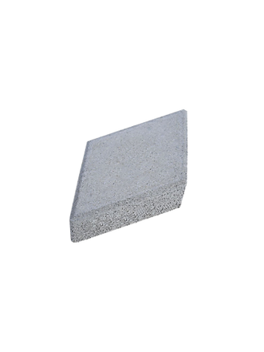
Baklava Parke Taşı
Klasik ve modernin buluşması, zamansız ve dinamik çizgiler
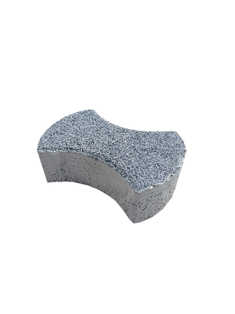
Parantez Parke Taşı
Dalgalı formuyla göze hitap eden, dekoratif ve şık zeminler
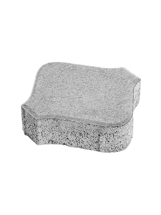
Elips Parke Taşı
Keskin çizgilerden uzak, göz yormayan modern ve doğal görünüm
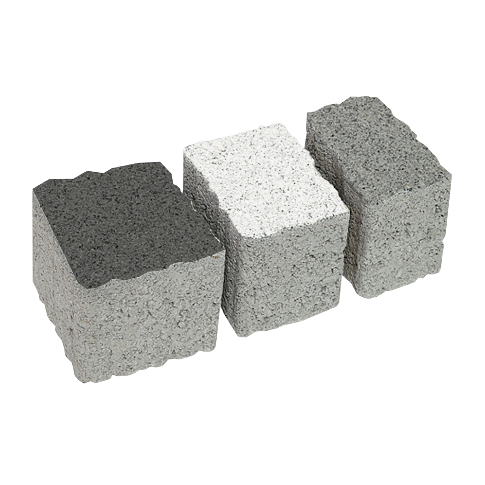
Begonit Taşı
Doğal antik görünüm, modüler renkli peyzaj uygulamaları
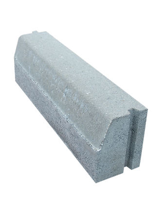
Bahçe Bordürü
Alanları ayıran fonksiyonel tasarım, temiz ve düzenli zeminler
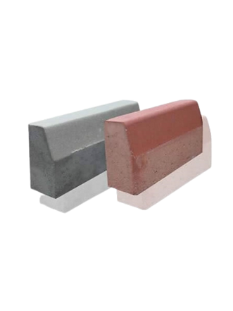
Karayolu Bordürü
Şehir içi ve şehirler arası yollarda güvenli sınırlar, dayanıklı hatlar
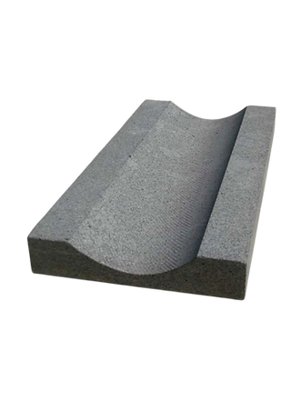
Yağmur Oluğu
Hızlı ve etkin su tahliyesi, zeminlerde maksimum altyapı koruması
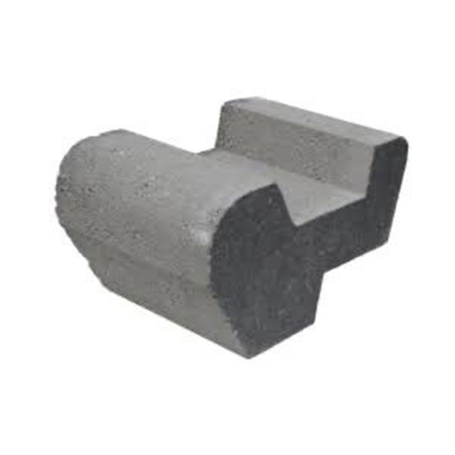
Şev Taşı
Toprak kaymalarını önleyen estetik ve yeşillendirilebilir şev setleri
Bims Bloklar
Yalıtım ve Hafiflik
Bims ürünlerimiz, yalıtım özellikleri ve hafif yapısıyla inşaat sektöründe tercih edilen malzemeler arasındadır. Yüksek kalite standartlarımız sayesinde müşterilerimize güvenilir ve dayanıklı bims ürünleri sunuyoruz.
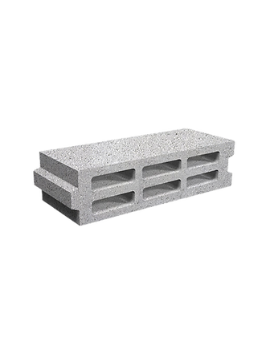
10'luk Bims Blok
Kolay işlenebilen, sıva tutuşu yüksek, ekonomik iç duvar çözümleri
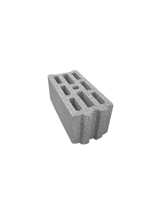
20'lik Bims Blok
Dış cephelerde maksimum ısı ve ses yalıtımı, yüksek enerji tasarrufu
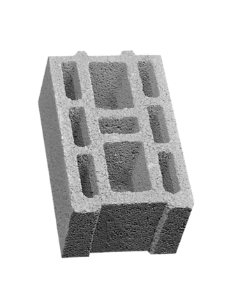
25'lik Bims Blok
Maksimum yalıtım ve dayanıklılık, mantolama ihtiyacını azaltan duvar çözümü
Lego Beton Bloklar
Modüler ve Pratik Çözümler
Lego beton ürünlerimiz, kolay ve hızlı kurulumu sayesinde inşaat sektöründe tercih edilen malzemeler arasındadır. Yüksek kalite standartlarımız sayesinde müşterilerimize güvenilir ve dayanıklı lego beton ürünleri sunuyoruz.
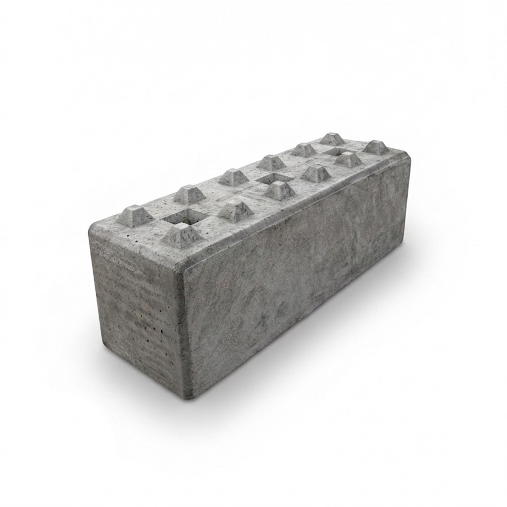
Lego Beton Duvar
Kolay ve hızlı kurulumu, ses yalıtımı ve ısı yalıtımı gibi özellikleri sayesinde inşaat sektöründe tercih edilen malzemeler arasındadır.
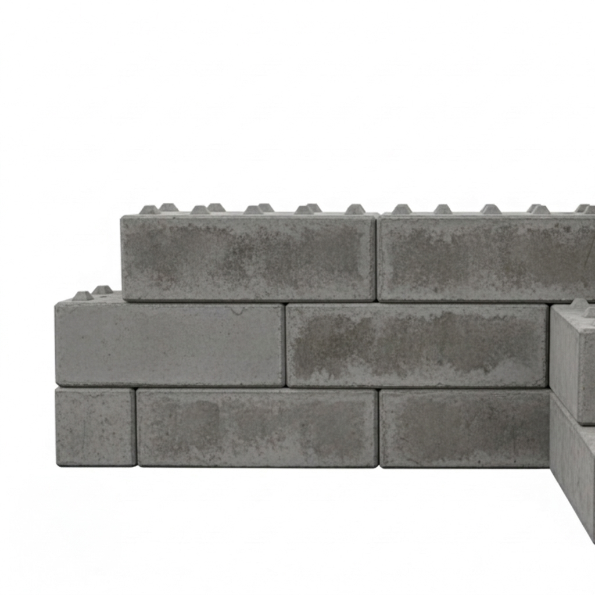
Lego Beton Duvar
Lego Beton bloklar kolay dizilimi sayesinde inşaat sektöründe tercih edilen malzemeler arasındadır.
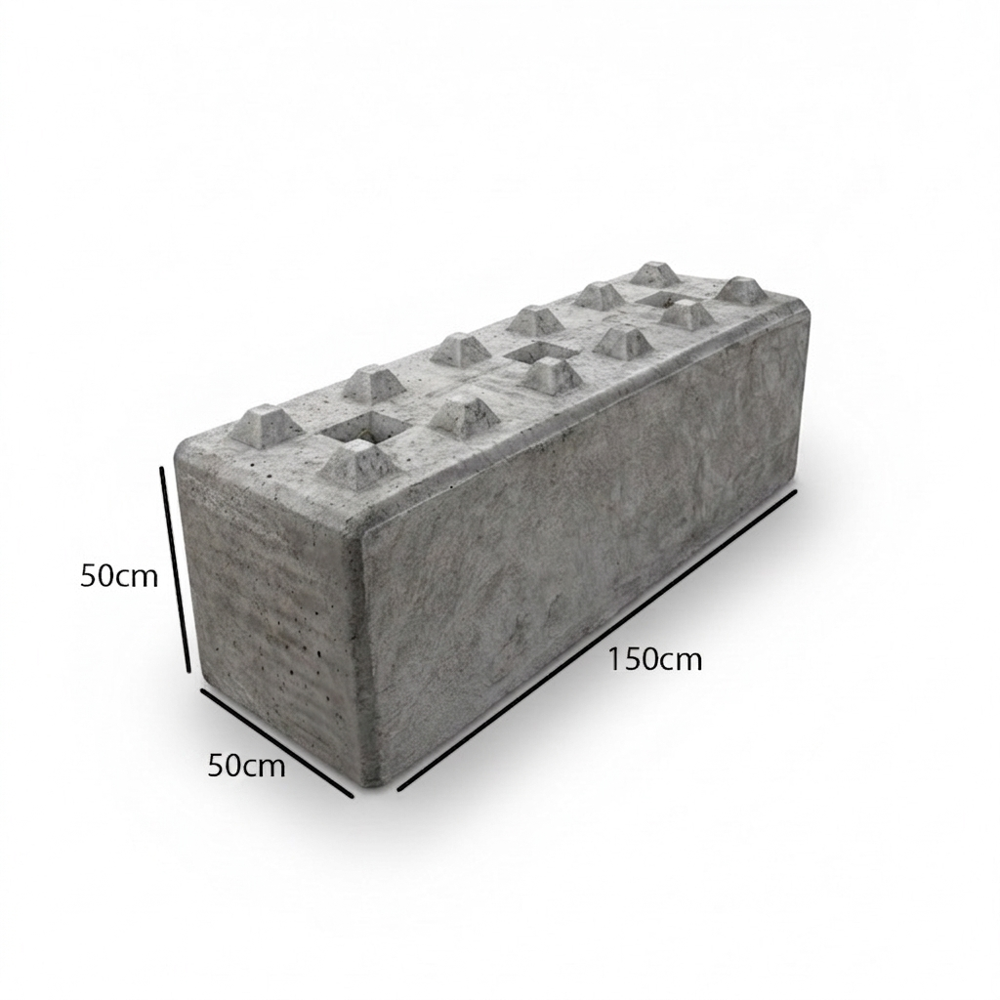
Lego Beton Blok Ölçüleri
Lego beton blok ölçüleri, ürünün boyutlarını ifade eder. Genellikle 50x50x150 cm boyutlarında üretilir.
Beton Bariyer
Beton Bariyer Sistemleri ile Maksimum Güvenlik
Beton bariyerler; trafik akışını düzenlemek, yüksek güvenlik alanları oluşturmak ve çevre sınırlarını en net şekilde belirlemek amacıyla üretilen, sarsılmaz bir güce sahip yapı elemanlarıdır. Şehir içi ve şehirler arası yollardan şantiyelere, kitlesel etkinlik alanlarından özel mülklere kadar geniş bir kullanım yelpazesine sahip olan bu bloklar, modern altyapıların en dinamik koruyucularıdır.

Beton Bariyer New Jersey
İnşaat sahalarından etkinlik alanlarına, şantiye çevrelerinden yol düzenlemelerine kadar pek çok farklı alanda tercih edilen New Jersey bariyerlerimiz, zorlu zemin koşullarında dahi üst düzey stabilite sunar.
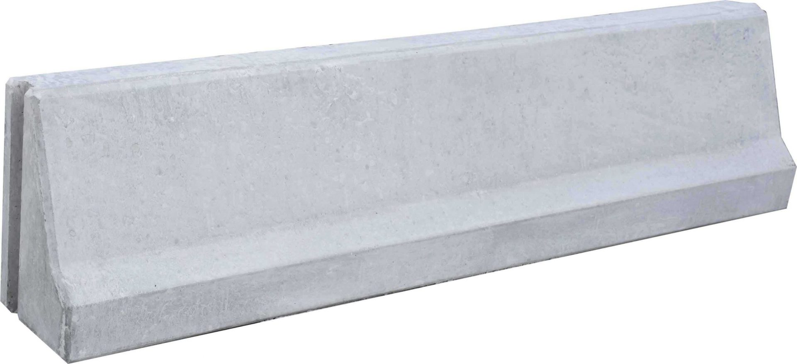
Beton Bariyer
Trafiği güvenli bir şekilde yönlendirmek, şantiye alanlarını korumak ve güvenli sınır çizgileri oluşturmak için tasarlanmıştır. Yüksek taşıma kapasitesi ve dayanıklı yapısı ile uzun ömürlü kullanım sunar.
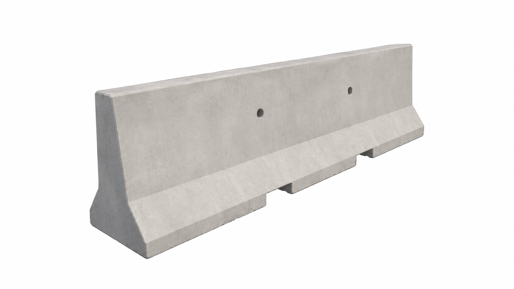
Beton Bariyer New Jersey
Birbirine geçen özel tasarımıyla montaj kolaylığı sağlayan ve yerleşim anından itibaren üstün dayanıklılık sunan bariyer çözümleridir. Geçici etkinlik alanlarından kalıcı güvenlik sınırlarına, şantiyelerden yol yönlendirmelerine kadar her projede esnek, taşınabilir ve güvenilir hızlı çözümdür.
Kutu Menfez
Beton Kutu Menfezler (Baks)
Kutu menfezler, karayolu, demiryolu, tarımsal sulama ve drenaj sistemlerinde suyun güvenli bir şekilde geçişini sağlamak için tasarlanmış, yüksek mukavemetli beton yapılardır. Çeşitli iç genişlik, yükseklik ve uzunluk ölçülerinde üretilebilen bu menfezler, yerinde döküm veya prefabrike olarak uygulanabilir. Genellikle zorlu zemin ve yük koşullarına dayanacak şekilde tasarlanır, montaj ve yerleştirme süreçlerinde kolaylık sunar. Betonarme kalitesi, su geçirimsizliği ve uzun ömürlü yapısı ile öne çıkan kutu menfezler, modern altyapı projelerinin vazgeçilmez bileşenleridir.
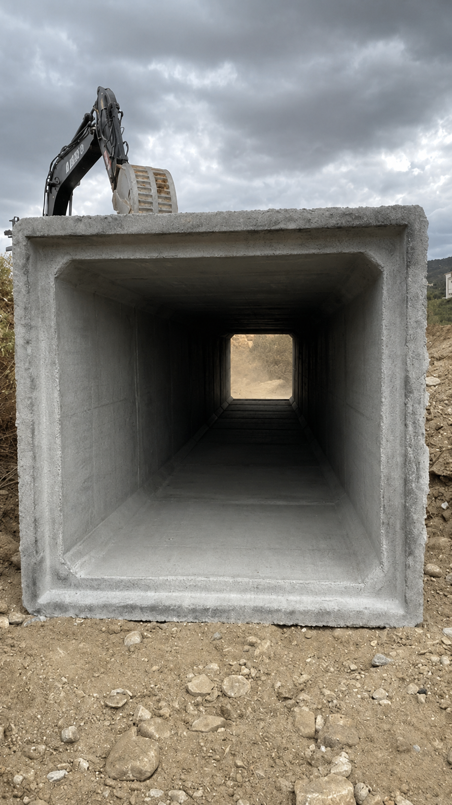
Kutu Menfez
Su geçişi gerektiren tüm projelerde güvenilir ve dayanıklı çözümler sunan kutu menfezler; karayolu, demiryolu, tarımsal sulama ve drenaj hatlarında üstün performans sağlar. Yüksek basınca ve aşınmaya karşı maksimum dayanıklılık sunar.
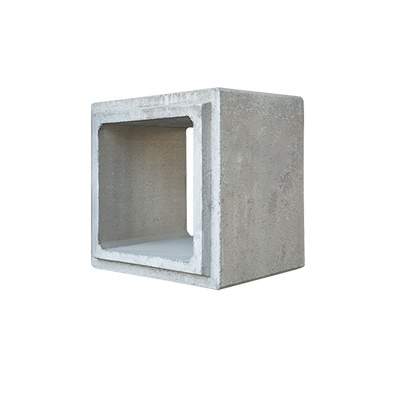
Betonarme Kutu Menfez
Betonarme kutu menfezler; karayolu, demiryolu, tarımsal sulama ve drenaj hatlarında üstün performans sağlar. Yüksek basınca ve aşınmaya karşı maksimum dayanıklılık sunar.
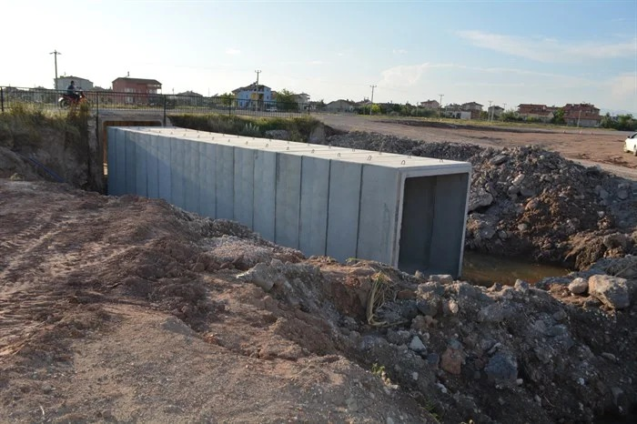
Baks Beton Menfez
Baks beton menfezler; karayolu, demiryolu, tarımsal sulama ve drenaj hatlarında üstün performans sağlar. Yüksek basınca ve aşınmaya karşı maksimum dayanıklılık sunar.
Ürün Özellikleri
Dayanıklılık
Yüksek basınç dayanımı ve uzun ömürlü kullanım
Yüksek Mukavemet & Dayanıklılık
Maksimum sağlamlık ve uzun ömürlü kullanım
Pratik ve Ekonomik Çözüm
İşçilik ve zamandan tasarruf